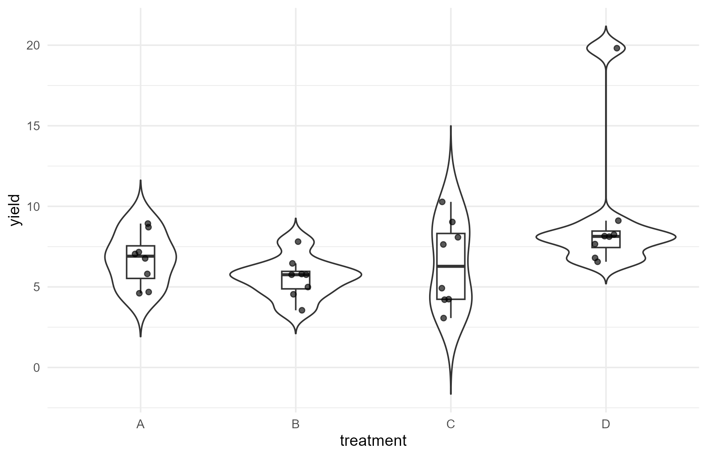

Design Foundations, CRD, and RCBD
agriRank Development Team
Source:vignettes/v01-design-crd-rcbd.Rmd
v01-design-crd-rcbd.RmdFoundational vignette Package:
agriRank Version targeted:
0.14.0 Owns: the design-foundation block.
Declaring the experimental unit and the randomization, validating the
declaration, and the one-factor rank workflows for completely randomized
and randomized complete block experiments.
1. Why this vignette exists
Almost every serious error in the analysis of a field experiment is committed before a single test is run. It is committed when the analyst decides, often implicitly, what the experimental unit was and which observations are independent.
Once that decision is wrong, no amount of methodological sophistication repairs it. A more flexible model fitted to a misdeclared design gives a more precise answer to the wrong question. A larger resampling budget gives a tighter interval around a quantity nobody wanted.
agriRank therefore makes the declaration explicit and
machine-readable, so that the rest of the workflow can be
checked against it. That is the entire content of this
vignette.
The rule it enforces is short:
Declare the randomization. Then use only the analyses that the declaration permits.
1.1 What this vignette does not cover
| Topic | Where |
|---|---|
| pairwise comparisons and compact letters | Effects, Conover, Contrasts, and Factorial Inference |
| split-plot, split-split, strip-plot analysis | Hierarchical Plot Designs, Trends, ANCOVA, and Power |
| repeated measures analysis and missing data | Repeated Measures and Missing Longitudinal Data |
| quantitative treatments as gradients | Nonparametric and Shape-Aware Regression |
| the whole workflow on one experiment | Integrated Agronomic Case Study |
Design objects for those structures are created here, because the creation is the same operation. Their analysis belongs elsewhere.
2. Learning objectives
After working through this vignette, the reader should be able to:
- state what the experimental unit is in a given field layout, and justify it from the randomization rather than from the data file;
- create an
agri_designobject for every design the package supports; - distinguish a completely randomized design from a randomized complete block design structurally, not by which test is habitual;
- read a
design_summary()and say what it commits the analysis to; - validate a declaration and interpret each class of warning;
- recognise an empty factorial cell and explain why collapsing it silently is not an option;
- recognise a duplicated repeated-measures cell and decide what a technical replicate should mean;
- recognise a numerically coded block and explain why the coding matters;
- run a Kruskal-Wallis analysis only when the observations are independent;
- run a Friedman analysis only when the complete unreplicated block structure the classical test requires is present;
- explain, in one sentence a reviewer would accept, why a blocked design must not be analysed as independent groups;
- read the safeguards this package raises as scientific statements rather than as software errors.
3. The design module in one map
| Function | What it does | When you need it |
|---|---|---|
simulate_agri() |
generate a teaching dataset for a named design | learning, testing, reproducible examples |
agri_design() |
declare the randomization structure | always, first |
design_summary() |
describe what was declared | before analysing, and in the methods section |
validate_agri_design() |
audit the declaration against the data | always, second |
agri_rank() |
omnibus inference in the declared structure | after the design is clean |
np_crd() |
one factor, completely randomized | the simplest case |
np_rcbd() |
one factor in complete blocks | the commonest field case |
agri_plot() |
look at the observed data | before and after modelling |
agri_methods() |
what each engine assumes | when choosing, or when refused |
3.1 The order is not negotiable
data.frame(
step = 1:5,
action = c("declare", "validate", "look", "fit", "interpret"),
fn = c("agri_design()", "validate_agri_design()", "agri_plot()",
"agri_rank() / np_crd() / np_rcbd()", "anova(), agri_effects()"),
skipping_it_means = c(
"the analysis is not connected to the experiment",
"an empty cell or a duplicate decides the result silently",
"an outlier or a coding error survives into the conclusion",
"nothing",
"a p-value without agronomic content")
)
#> step action fn
#> 1 1 declare agri_design()
#> 2 2 validate validate_agri_design()
#> 3 3 look agri_plot()
#> 4 4 fit agri_rank() / np_crd() / np_rcbd()
#> 5 5 interpret anova(), agri_effects()
#> skipping_it_means
#> 1 the analysis is not connected to the experiment
#> 2 an empty cell or a duplicate decides the result silently
#> 3 an outlier or a coding error survives into the conclusion
#> 4 nothing
#> 5 a p-value without agronomic content3.2 Which engines exist, and what each assumes
agri_methods()
#> domain
#> 1 one-way
#> 2 RCBD
#> 3 factorial
#> 4 multiple comparisons
#> 5 split-plot
#> 6 split-split
#> 7 strip-plot
#> 8 repeated
#> 9 repeated+missing
#> 10 multivariate
#> 11 multi-environment
#> 12 ANCOVA
#> 13 nonparametric regression
#> 14 robust sensitivity
#> method
#> 1 Kruskal / permutation
#> 2 Friedman / restricted permutation
#> 3 rankFD / ARTool / permutation
#> 4 Wilcoxon / Conover / maxT
#> 5 ARTool
#> 6 ARTool hierarchical strata
#> 7 ARTool strip-specific random strata
#> 8 nparLD / MANOVA.RM / native wild
#> 9 native wild ATS/WTS/MATS
#> 10 MANOVA.RM MANOVA / MANOVA.wide / multRM
#> 11 rankFD / ARTool / permuco with environment enforced
#> 12 permuco
#> 13 spline / LOESS / kernel / isotonic / COBS / Theil-Sen / quantile / GAM / SCAM / integer-support
#> 14 WRS2 / alternative engines
#> status
#> 1 implemented
#> 2 implemented
#> 3 adapter+implemented
#> 4 implemented+adapter
#> 5 adapter
#> 6 adapter
#> 7 adapter
#> 8 adapter+implemented
#> 9 implemented-experimental
#> 10 adapter+integrated
#> 11 adapter+integrated
#> 12 adapter
#> 13 implemented+adapter
#> 14 adapterThis table is the honest starting point on a new computer. Several engines are optional, and an engine whose backend is absent will say so by name rather than fall back silently to something else.
4. The experimental unit
4.1 The definition that matters
The experimental unit is the smallest physical entity to which a treatment was independently assigned by the randomization.
Every word does work. Physical, because it is a plot, a pot, a tray, an animal, not a measurement. Independently, because two units that received the same randomization draw are one unit. Assigned, because the unit is defined by the act of allocation, not by the act of measuring.
4.2 Three layouts that look alike and are not
| Layout | Experimental unit | Replicates for the treatment |
|---|---|---|
| 20 pots, treatment randomized to each pot | the pot | 20 |
| 4 trays of 5 pots, treatment randomized to each tray | the tray | 4 |
| 20 pots, treatment randomized to each pot, 3 leaves measured per pot | the pot | 20 |
The second is the classic pseudoreplication trap: analysing 20 pots when the randomization created 4 units inflates the apparent replication five-fold, and every interval is correspondingly too narrow.
The third is the mirror image and is not a trap: measuring three leaves per pot does not create replication, but it does not destroy it either. The three leaves should be aggregated to the pot before analysis, with a stated rule.
5. Blocking, and what declaring a block asserts
5.1 What a block is for
Blocking removes an identified source of variation from the treatment comparison by ensuring every treatment meets it equally. A block is a set of units expected to be more alike than units in different blocks: a field strip, a greenhouse bench, a day of measurement, a batch of seed.
5.2 What declaring one asserts
Declaring a block is a scientific claim, not a formatting choice. It asserts:
- that units within a block are more alike than units across blocks;
- that every treatment appeared in every block, in a complete design;
- and therefore that treatments may be compared within blocks, which is what removes the between-block variation from the comparison.
5.3 What it then forbids
The third assertion is what makes an analysis that discards the block invalid rather than merely inefficient. Discarding it puts the between-block variation back into the residual, so the comparison is made against a yardstick the design had already eliminated.
This vignette demonstrates the refusal in section 13.2, and it is worth anticipating the reason here: the package is not being conservative, it is being consistent with the declaration you made.
5.4 A block is categorical even when it is a number
Blocks are often coded 1, 2, 3. That coding is a label. If the analysis treats it as a continuous covariate, it fits a linear trend across blocks, which is a different scientific model and is almost never what was intended.
agri_design() warns about this, and section 12.3 shows
the warning.
6. agri_design() as the central object
6.1 Completely randomized design
crd <- simulate_agri("crd", seed = 201)
str(crd)
#> 'data.frame': 24 obs. of 2 variables:
#> $ treatment: Factor w/ 4 levels "A","B","C","D": 1 1 1 1 1 1 2 2 2 2 ...
#> $ yield : num 5.95 3.97 2.16 1.76 6.57 ...
des_crd <- agri_design(
yield ~ treatment,
data = crd,
design = "crd"
)
des_crd
#> agriRank experimental design
#> Design: crd
#> Response: yield
#> Factors: treatment
#> Rows: 24
design_summary(des_crd)
#> $design
#> [1] "crd"
#>
#> $responses
#> [1] "yield"
#>
#> $treatments
#> [1] "treatment"
#>
#> $blocks
#> NULL
#>
#> $subjects
#> NULL
#>
#> $within
#> NULL
#>
#> $whole_plot
#> NULL
#>
#> $subplot
#> NULL
#>
#> $subsubplot
#> NULL
#>
#> $strip_a
#> NULL
#>
#> $strip_b
#> NULL
#>
#> $environment
#> NULL
#>
#> $n_rows
#> [1] 24
#>
#> $n_treatment_cells_observed
#> [1] 4
#>
#> $missing_response
#> yield
#> 0
#>
#> $randomization
#> [1] "Treatment assignments are exchangeable across experimental units, subject to the declared treatment structure."
#>
#> $validation
#> $ok
#> [1] TRUE
#>
#> $problems
#> [1] severity code message
#> <0 rows> (or 0-length row.names)
#>
#> attr(,"class")
#> [1] "agri_validation"The object records:
- the response;
- the treatment variables and their type;
- the block, if declared;
- subject and within factors, if repeated;
- the whole-plot and subplot hierarchy, if present;
- the environment, if multi-environment;
- a description of the randomization;
- the validation results.
6.2 Factorial randomized complete block
set.seed(202)
rcbd_f <- expand.grid(
block = factor(1:5),
cultivar = factor(c("C1", "C2", "C3")),
phosphorus = factor(c("P0", "P1", "P2"))
)
rcbd_f$yield <-
6 +
0.7 * as.numeric(rcbd_f$cultivar) +
0.5 * as.numeric(rcbd_f$phosphorus) +
0.3 * (rcbd_f$cultivar == "C3" & rcbd_f$phosphorus == "P2") +
0.2 * as.numeric(rcbd_f$block) +
rt(nrow(rcbd_f), df = 5)
des_rcbd_f <- agri_design(
yield ~ cultivar * phosphorus,
data = rcbd_f,
design = "rcbd",
block = block
)
design_summary(des_rcbd_f)
#> $design
#> [1] "rcbd"
#>
#> $responses
#> [1] "yield"
#>
#> $treatments
#> [1] "cultivar" "phosphorus"
#>
#> $blocks
#> [1] "block"
#>
#> $subjects
#> NULL
#>
#> $within
#> NULL
#>
#> $whole_plot
#> NULL
#>
#> $subplot
#> NULL
#>
#> $subsubplot
#> NULL
#>
#> $strip_a
#> NULL
#>
#> $strip_b
#> NULL
#>
#> $environment
#> NULL
#>
#> $n_rows
#> [1] 45
#>
#> $n_treatment_cells_observed
#> [1] 9
#>
#> $missing_response
#> yield
#> 0
#>
#> $randomization
#> [1] "Treatment combinations are randomized within blocks; block labels are not exchangeable with treatments."
#>
#> $validation
#> $ok
#> [1] TRUE
#>
#> $problems
#> [1] severity code message
#> <0 rows> (or 0-length row.names)
#>
#> attr(,"class")
#> [1] "agri_validation"Note the response: it was generated with a t distribution on five degrees of freedom, not a normal. That is deliberate. Heavy tails are ordinary in field data, and they are one reason rank-based inference is the default here rather than a fallback for when a normality test fails.
6.3 Repeated measures
rm <- simulate_agri("repeated", seed = 203)
des_rm <- agri_design(
height ~ treatment * time,
data = rm,
design = "repeated",
subject = subject,
within = time
)
design_summary(des_rm)
#> $design
#> [1] "repeated"
#>
#> $responses
#> [1] "height"
#>
#> $treatments
#> [1] "treatment" "time"
#>
#> $blocks
#> NULL
#>
#> $subjects
#> [1] "subject"
#>
#> $within
#> [1] "time"
#>
#> $whole_plot
#> NULL
#>
#> $subplot
#> NULL
#>
#> $subsubplot
#> NULL
#>
#> $strip_a
#> NULL
#>
#> $strip_b
#> NULL
#>
#> $environment
#> NULL
#>
#> $n_rows
#> [1] 48
#>
#> $n_treatment_cells_observed
#> [1] 8
#>
#> $missing_response
#> height
#> 0
#>
#> $randomization
#> [1] "Between-subject treatments are assigned to subjects/experimental units; within-subject factors index repeated observations on the same subject."
#>
#> $validation
#> $ok
#> [1] TRUE
#>
#> $problems
#> [1] severity code message
#> <0 rows> (or 0-length row.names)
#>
#> attr(,"class")
#> [1] "agri_validation"subject names the unit that was measured repeatedly.
within names the factor that varies inside it. Both are
required, because the dependence they describe cannot be inferred from
the data file.
6.4 Split-plot
sp <- simulate_agri("split_plot", seed = 204)
des_sp <- agri_design(
yield ~ irrigation * cultivar,
data = sp,
design = "split_plot",
block = block,
whole_plot = irrigation,
subplot = cultivar
)
design_summary(des_sp)
#> $design
#> [1] "split_plot"
#>
#> $responses
#> [1] "yield"
#>
#> $treatments
#> [1] "irrigation" "cultivar"
#>
#> $blocks
#> [1] "block"
#>
#> $subjects
#> NULL
#>
#> $within
#> NULL
#>
#> $whole_plot
#> [1] "irrigation"
#>
#> $subplot
#> [1] "cultivar"
#>
#> $subsubplot
#> NULL
#>
#> $strip_a
#> NULL
#>
#> $strip_b
#> NULL
#>
#> $environment
#> NULL
#>
#> $n_rows
#> [1] 36
#>
#> $n_treatment_cells_observed
#> [1] 6
#>
#> $missing_response
#> yield
#> 0
#>
#> $randomization
#> [1] "Whole-plot treatments are randomized at the whole-plot stratum; subplot treatments are randomized within whole plots."
#>
#> $validation
#> $ok
#> [1] TRUE
#>
#> $problems
#> [1] severity code message
#> <0 rows> (or 0-length row.names)
#>
#> attr(,"class")
#> [1] "agri_validation"A split-plot has two experimental units, one per randomization level. That is its defining property, and it is why a split-plot analysed as a factorial gives the whole-plot factor a residual that is far too small.
6.5 Split-split plot
ssp <- simulate_agri("split_split", seed = 205)
des_ssp <- agri_design(
yield ~ irrigation * cultivar * timing,
data = ssp,
design = "split_split",
block = block,
whole_plot = irrigation,
subplot = cultivar,
subsubplot = timing
)
design_summary(des_ssp)
#> $design
#> [1] "split_split"
#>
#> $responses
#> [1] "yield"
#>
#> $treatments
#> [1] "irrigation" "cultivar" "timing"
#>
#> $blocks
#> [1] "block"
#>
#> $subjects
#> NULL
#>
#> $within
#> NULL
#>
#> $whole_plot
#> [1] "irrigation"
#>
#> $subplot
#> [1] "cultivar"
#>
#> $subsubplot
#> [1] "timing"
#>
#> $strip_a
#> NULL
#>
#> $strip_b
#> NULL
#>
#> $environment
#> NULL
#>
#> $n_rows
#> [1] 72
#>
#> $n_treatment_cells_observed
#> [1] 12
#>
#> $missing_response
#> yield
#> 0
#>
#> $randomization
#> [1] "Randomization is hierarchical across whole-plot, subplot and sub-subplot strata."
#>
#> $validation
#> $ok
#> [1] TRUE
#>
#> $problems
#> [1] severity code message
#> <0 rows> (or 0-length row.names)
#>
#> attr(,"class")
#> [1] "agri_validation"Three randomization levels, three experimental units, three error
strata. Omitting subsubplot is refused rather than
assumed:
agri_design(yield ~ irrigation * cultivar * timing, ssp,
design = "split_split", block = block,
whole_plot = irrigation, subplot = cultivar)
#> Error:
#> ! Split-split designs require `block=`, `whole_plot=`, `subplot=`, and `subsubplot=`.6.6 Strip-plot
strip <- simulate_agri("strip_plot", seed = 206)
des_strip <- agri_design(
yield ~ irrigation * nitrogen,
data = strip,
design = "strip_plot",
block = block,
strip_a = irrigation,
strip_b = nitrogen
)
design_summary(des_strip)
#> $design
#> [1] "strip_plot"
#>
#> $responses
#> [1] "yield"
#>
#> $treatments
#> [1] "irrigation" "nitrogen"
#>
#> $blocks
#> [1] "block"
#>
#> $subjects
#> NULL
#>
#> $within
#> NULL
#>
#> $whole_plot
#> NULL
#>
#> $subplot
#> NULL
#>
#> $subsubplot
#> NULL
#>
#> $strip_a
#> [1] "irrigation"
#>
#> $strip_b
#> [1] "nitrogen"
#>
#> $environment
#> NULL
#>
#> $n_rows
#> [1] 72
#>
#> $n_treatment_cells_observed
#> [1] 12
#>
#> $missing_response
#> yield
#> 0
#>
#> $randomization
#> [1] "Two treatment sets are randomized in perpendicular strips; their intersection defines the interaction stratum."
#>
#> $validation
#> $ok
#> [1] TRUE
#>
#> $problems
#> [1] severity code message
#> <0 rows> (or 0-length row.names)
#>
#> attr(,"class")
#> [1] "agri_validation"A strip-plot is not a split-plot with different names. Both factors are applied in strips across the whole block, so the interaction has its own error stratum, distinct from either main effect. Analysing it as a split-plot tests the interaction against the wrong denominator.
6.7 What the declaration protects
The design object is not a decorative metadata container. It protects the inferential workflow in four concrete ways:
| Protection | Example |
|---|---|
| an engine that would discard a declared block is rejected | section 13.2 |
| a hierarchical design cannot proceed without all its levels | section 6.5 |
| a repeated-measures design is not silently converted to independent groups | Repeated Measures vignette |
| the declared structure travels into the report | agri_report() |
6.8 Interpretation
Write the declaration first, before any analysis, and read the
design_summary() aloud against the field plan. If the two
do not match, the field plan is right and the declaration is wrong.
7. What validation checks
validate_agri_design(des_crd, error = FALSE)
#> $ok
#> [1] TRUE
#>
#> $problems
#> [1] severity code message
#> <0 rows> (or 0-length row.names)
#>
#> attr(,"class")
#> [1] "agri_validation"
validate_agri_design(des_rcbd_f, error = FALSE)
#> $ok
#> [1] TRUE
#>
#> $problems
#> [1] severity code message
#> <0 rows> (or 0-length row.names)
#>
#> attr(,"class")
#> [1] "agri_validation"
validate_agri_design(des_rm, error = FALSE)
#> $ok
#> [1] TRUE
#>
#> $problems
#> [1] severity code message
#> <0 rows> (or 0-length row.names)
#>
#> attr(,"class")
#> [1] "agri_validation"error = FALSE reports problems without stopping, which
is what you want while exploring. Leave it at the default in a script
that must not proceed on a broken declaration.
The audit answers questions that no model-selection criterion can repair afterwards:
- Are all intended treatment combinations represented?
- Which factor was randomized to which unit?
- Which observations share an experimental unit?
- Is a repeated measurement being counted as an independent replicate?
- Are there empty cells?
- Is a categorical identifier stored as a number?
8. Empty factorial cells
fac <- simulate_agri("factorial", seed = 211)
fac_bad <- subset(fac, !(A == "A2" & B == "B3"))
des_fac_bad <- agri_design(
yield ~ A * B,
data = fac_bad,
design = "factorial"
)
validate_agri_design(des_fac_bad, error = FALSE)
#> $ok
#> [1] TRUE
#>
#> $problems
#> severity code
#> 1 warning empty_factorial_cell
#> message
#> 1 At least one factorial treatment cell is empty; some effects may be non-estimable.
#>
#> attr(,"class")
#> [1] "agri_validation"8.1 Why this matters more than it looks
An empty treatment combination has three consequences, in increasing order of seriousness:
- some effects become non-estimable, so the model reports fewer terms than the design implies;
- the marginal means change meaning, because a marginal mean is now an average over an unbalanced and non-representative set of cells;
- the interaction becomes partly unidentifiable, so a non-significant interaction may reflect the missing cell rather than the biology.
8.2 What to do instead
The correct response is not to collapse the factors silently. It is to decide, scientifically, one of the following, and to state which was chosen:
| Situation | Defensible response |
|---|---|
| the cell was never intended | analyse as an incomplete design, and say so |
| the cell was lost by accident | report it as missing and check whether the loss is related to treatment |
| the cell is structurally impossible | redefine the treatment factor to reflect that |
9. Duplicated repeated cells
rm_dup <- rbind(rm, rm[1, ])
des_dup <- agri_design(
height ~ treatment * time,
data = rm_dup,
design = "repeated",
subject = subject,
within = time
)
validate_agri_design(des_dup, error = FALSE)
#> $ok
#> [1] FALSE
#>
#> $problems
#> severity code
#> 1 error duplicate_repeated_cell
#> message
#> 1 A subject has more than one observation for the same within-subject cell within its between-subject treatment group. Aggregate technical replicates explicitly before analysis.
#>
#> attr(,"class")
#> [1] "agri_validation"9.1 What a duplicate can mean
Two rows in the same subject-by-time cell can mean three different things, and they call for three different responses:
| It means | Response |
|---|---|
| a technical replicate of the measurement | aggregate with a stated rule, usually the mean or median |
| a data-entry error | correct or remove it, and document |
| a second experimental unit misfiled | fix the subject identifier |
9.2 Why the package will not choose for you
If two technical replicates are left in, the classical Friedman-type machinery either fails or treats them as extra replication, which they are not. Aggregating is nearly always right, but the aggregation rule is a scientific decision: a mean and a maximum answer different questions about a leaf measurement.
10. Numerically coded blocks
rnum <- simulate_agri("rcbd", seed = 212)
rnum$block_num <- as.numeric(rnum$block)
des_numblock <- agri_design(
yield ~ treatment,
rnum,
design = "rcbd",
block = block_num
)
des_numblock$validation
#> $ok
#> [1] TRUE
#>
#> $problems
#> severity code
#> 1 warning numeric_block
#> message
#> 1 Block `block_num` is numeric; verify that it should be treated as a categorical blocking factor.
#>
#> attr(,"class")
#> [1] "agri_validation"A block identifier can be numerically coded but is conceptually categorical. The warning exists because treating the block number as a continuous trend implies a different scientific model: that yield changes linearly as one moves from block 1 to block 5, which is a spatial trend hypothesis rather than a blocking one.
11. CRD: rank inference when observations are independent
crd <- simulate_agri("crd", seed = 301, n = 8)
fit_crd <- np_crd(
yield ~ treatment,
data = crd,
method = "auto"
)
fit_crd
#> agriRank fit
#> Design: crd
#> Method: Kruskal-Wallis
#> Response: yield
#> effect statistic df p_value
#> 1 treatment 8.161932 3 0.04278097
anova(fit_crd)
#> effect statistic df p_value
#> 1 treatment 8.161932 3 0.04278097For a one-factor completely randomized design, automatic routing can use Kruskal-Wallis, because the design asserts that the observations are independent.
11.1 The statistic
For groups with rank sums , sample sizes , and total size ,
Under standard large-sample conditions, is compared with a reference distribution on degrees of freedom.
11.2 What the hypothesis actually is
This is worth being precise about, because it is stated loosely almost everywhere.
The Kruskal-Wallis test does not test equality of medians in general. It tests whether the samples come from the same distribution. Under the additional assumption that the distributions differ only by a location shift, it becomes a test about medians; without that assumption, a significant result can arise from a difference in spread or shape.
| Assumption | Then the test is about |
|---|---|
| samples independent, nothing else | equality of the whole distributions |
| plus: distributions differ only by a shift | equality of medians |
| plus: distributions are also symmetric | equality of means |
Report the first unless the second is defensible, and say which you assumed.
11.3 Look at the data
p_crd <- agri_plot(fit_crd, type = "data")
p_crd
Observed values by treatment. A default that shows the data, not only the treatment means.
A default graphic that shows observed values rather than only means is not a stylistic preference. A figure of means with error bars hides bimodality, a single extreme plot, and unequal spread, all of which change what the test means under 11.2.
11.4 Interpretation
The omnibus test answers whether the distributions are compatible with a common treatment distribution. It does not say which treatments differ. That is a second inferential step with its own multiplicity problem, and it belongs to Effects, Conover, Contrasts, and Factorial Inference.
12. RCBD: preserve the block
rcbd <- simulate_agri("rcbd", seed = 302, n = 6)
fit_rcbd <- np_rcbd(
yield ~ treatment,
data = rcbd,
block = block,
method = "friedman"
)
fit_rcbd
#> agriRank fit
#> Design: rcbd
#> Method: Friedman rank-sum
#> Response: yield
#> effect statistic df p_value
#> 1 treatment 12.6 3 0.005586546
anova(fit_rcbd)
#> effect statistic df p_value
#> 1 treatment 12.6 3 0.005586546The classical Friedman analysis is appropriate for a complete unreplicated block-by-treatment layout: exactly one observation in every block-by-treatment cell.
12.1 The statistic
With blocks and treatments, using treatment rank sums computed from within-block ranks,
12.2 Why the block cannot be dropped
The ranking happens inside each block. That single fact carries the whole logic:
- within-block ranking removes the block effect exactly, without estimating it;
- so a block that is uniformly good contributes no bias, however good it is;
- and the comparison is therefore free of between-block variation.
Ignoring the block destroys step 1, and with it the reason the procedure works.
12.3 What Friedman requires, and what to do when it is not met
# Two observations per block-by-treatment cell: the classical test does not apply.
rcbd_rep <- rbind(rcbd, rcbd)
np_rcbd(yield ~ treatment, rcbd_rep, block = block, method = "friedman")
#> Error:
#> ! Classical Friedman requires exactly one observation for each block-by-treatment cell. Use a permutation/rank-based alternative for incomplete or replicated blocks.The requirement is structural, not statistical. With replication inside cells, the classical Friedman statistic is not defined, and the package says so rather than computing something adjacent.
The alternatives, all of which retain the block:
| Situation | Use |
|---|---|
| replicated cells |
method = "rankFD" or "ART" or
"permuco"
|
| incomplete blocks | a permutation-based engine, and report the incompleteness |
| more than one factor |
np_factorial() with the block declared |
13. The safeguard, and why it is a feature
13.1 The situation
An analyst has blocked data and wants a Kruskal-Wallis test, because it is the test they know.
13.2 The refusal
agri_rank(
agri_design(yield ~ treatment, rcbd, design = "rcbd", block = block),
method = "kruskal"
)
#> Error:
#> ! Method `kruskal` is not allowed when a block is declared because this adapter would analyze observations as independent and discard the randomization structure. Use a block-aware engine such as Friedman (one-way complete RCBD), ART, or permuco as appropriate.13.3 Why this failure is desirable
A method valid for independent groups is not automatically valid in a blocked experiment. The refusal prevents an analysis that would:
- inflate the residual variation with between-block differences;
- lose the power the blocking was designed to gain;
- and answer a question about an experiment that was not performed.
None of those would announce themselves. The test would run, produce a plausible p-value, and be wrong in a direction the analyst could not detect.
13.4 The general principle
Throughout this package, a refusal carries a scientific reason, not a stack trace. When you meet one, the productive response is to read the reason and ask whether the declaration or the intended analysis should change. Both are legitimate answers; silently overriding the check is not.
13A. What blocking actually buys
Blocking is usually justified in words. It can be demonstrated, and the demonstration is more persuasive than the words.
The experiment below has a strong block effect built in. It is analysed twice: once retaining the block, once discarding it.
set.seed(404)
k <- 5; b <- 8
dd <- expand.grid(treatment = factor(paste0("T", 1:k)),
block = factor(paste0("B", 1:b)))
# A real treatment effect, and a large block effect on top of it.
dd$yield <- 10 +
c(T1 = 0, T2 = 0.6, T3 = 1.0, T4 = 1.3, T5 = 1.6)[as.character(dd$treatment)] +
rep(seq(-3, 3, length.out = b), each = k) +
rnorm(nrow(dd), 0, 0.8)
with_block <- np_rcbd(yield ~ treatment, dd, block = block, method = "friedman")
without <- np_crd(yield ~ treatment, dd, method = "kruskal")
data.frame(
analysis = c("block retained (Friedman)", "block discarded (Kruskal-Wallis)"),
p_value = signif(c(with_block$omnibus$p_value[1],
without$omnibus$p_value[1]), 3)
)
#> analysis p_value
#> 1 block retained (Friedman) 0.00118
#> 2 block discarded (Kruskal-Wallis) 0.5830013A.1 Reading the comparison
The treatment effect is identical in both analyses, because it is the same data. What differs is the yardstick.
Retaining the block ranks within replicate strips, so the large strip-to-strip differences never enter the comparison. Discarding it pools everything, so those same differences become residual variation that the treatment effect must overcome.
The consequence is not subtle. In a field with real spatial structure, the blocked analysis can detect a difference the unblocked analysis cannot see at all, from exactly the same plots.
13A.2 The corollary that is less often stated
Blocking is not free. It costs degrees of freedom, and if there is no block-to-block variation, the blocked analysis is slightly less powerful than the unblocked one.
set.seed(405)
dn <- dd
# Same treatments, but the block effect removed.
dn$yield <- 10 +
c(T1 = 0, T2 = 0.6, T3 = 1.0, T4 = 1.3, T5 = 1.6)[as.character(dn$treatment)] +
rnorm(nrow(dn), 0, 0.8)
data.frame(
analysis = c("block retained", "block discarded"),
p_value = signif(c(
np_rcbd(yield ~ treatment, dn, block = block, method = "friedman")$omnibus$p_value[1],
np_crd(yield ~ treatment, dn, method = "kruskal")$omnibus$p_value[1]), 3)
)
#> analysis p_value
#> 1 block retained 0.00330
#> 2 block discarded 0.00567This is why blocking is a design decision made from knowledge of the field, not an analytical decision made from the data. Choosing to block after seeing which analysis gives the smaller p-value is the same error as choosing an engine that way.
13B. Ties, and why they are not a nuisance
13B.1 Where ties come from
Ties are ordinary in agronomy. Disease scores on a 0-9 scale, counts of surviving plants, yields rounded to the nearest 0.1 t/ha, and any ordinal assessment all produce them.
set.seed(406)
sc <- data.frame(
block = factor(rep(1:6, each = 4)),
treatment = factor(rep(c("A", "B", "C", "D"), 6))
)
sc$score <- pmin(9, pmax(0, round(
4 + c(A = 0, B = 1.2, C = 2.1, D = 2.6)[as.character(sc$treatment)] +
rnorm(nrow(sc), 0, 1.1))))
table(sc$score)
#>
#> 2 3 4 5 6 7 8
#> 1 1 4 5 6 6 113B.2 What the rank machinery does with them
Tied observations receive the average of the ranks they would have occupied. That is the standard convention, and it has two consequences:
- the test statistic must be corrected for ties, or it is conservative;
- with heavy tying the asymptotic reference distribution becomes less trustworthy, and a permutation engine is preferable.
fit_sc <- np_rcbd(score ~ treatment, sc, block = block, method = "friedman")
fit_sc$omnibus
#> effect statistic df p_value
#> 1 treatment 4.5625 3 0.206782713B.3 Why an ordinal score is a good case for this package, not a bad one
A rank-based analysis is not a compromise for ordinal data. It is the natural analysis, because the data carry order and nothing more. The alternative, treating a 0-9 disease score as a measurement on an equal-interval scale, asserts that the difference between 1 and 2 equals the difference between 8 and 9, which no scoring scale guarantees.
| Data type | Mean is meaningful | Rank analysis appropriate |
|---|---|---|
| yield in t/ha | yes | yes |
| disease score 0-9 | no | yes |
| presence or absence | no | yes, with care |
| ranked preference | no | yes |
13C. How much replication is enough
13C.1 The question, put correctly
“How many replicates do I need” has no answer. “How many replicates do I need to detect a difference of agronomic size D with probability P” has one.
The three quantities are inseparable: replication, the difference worth detecting, and the variability of the material. Fixing any two determines the third.
agri_power() takes two functions rather than a formula,
and the reason is worth understanding. A power calculation is only as
honest as the data-generating assumption behind it, so the package makes
you write that assumption down as code. A generator that produces normal
errors with equal variances will report optimistic power for an
experiment whose real material is skewed.
# The generator encodes what you believe the experiment will look like.
make_rcbd <- function(nblocks, effect = 0.8, sd = 1) {
function(...) {
d <- expand.grid(treatment = factor(paste0("T", 1:4)),
block = factor(seq_len(nblocks)))
d$y <- effect * (as.numeric(d$treatment) - 1) / 3 +
as.numeric(d$block) * 0.4 + rnorm(nrow(d), 0, sd)
d
}
}
# The analyzer is the analysis you actually intend to run.
analyze_rcbd <- function(d)
np_rcbd(y ~ treatment, d, block = block, method = "friedman")$omnibus$p_value[1]
pw <- do.call(rbind, lapply(c(4, 6, 10), function(nb) {
r <- agri_power(make_rcbd(nb), analyze_rcbd, nsim = 120, seed = 1)
data.frame(blocks = nb, power = round(r$power, 3))
}))
pw
#> blocks power
#> 1 4 0.075
#> 2 6 0.117
#> 3 10 0.18313C.2 Reading the table
Power rises with blocks, steeply at first and then slowly. The practical reading is usually the reverse of the one intended: not “how much power do I get from 12 blocks”, but “below how many blocks is this experiment not worth running”.
13C.3 The most common design failure
An experiment with four blocks, three treatments, and a difference of agronomic interest that is small relative to the plot-to-plot variation. It will almost certainly return a non-significant result, and that result will be uninterpretable: it distinguishes nothing.
The remedy is a design decision, taken before the field is laid out. It is not an analytical decision taken afterwards, and no method in this package repairs it.
13C.4 Interpretation
Report the detectable difference alongside the result, especially when the result is non-significant. “We could not detect a difference” and “we could not have detected a difference of agronomic importance” are very different sentences, and only the second is honest when the design was small.
14. Analysing the measurement instead of the experimental unit
The mistake. Three leaves measured per plot, entered as three rows, analysed as three replicates.
Why it is wrong. The randomization created one unit, not three. Every interval is too narrow and every p-value too small, by roughly the square root of the pseudoreplication factor.
What prevents it. agri_design() records
the unit, and validate_agri_design() reports duplicated
cells. See sections 4 and 9.
15. Dropping the block
The mistake. Kruskal-Wallis on blocked data.
Why it is wrong. Section 13.3.
What prevents it. agri_rank() refuses
the engine by name. See section 13.2.
16. Storing a block as a number
The mistake. Leaving block as
1:5 and letting a downstream model treat it as
continuous.
Why it is wrong. It fits a linear trend across blocks, a different scientific model, and it silently spends one degree of freedom instead of four.
What prevents it. agri_design() warns.
See section 10.
17. Collapsing an empty cell
The mistake. Dropping a factor because one combination is missing, so that the model fits.
Why it is wrong. It changes the estimand without saying so. The marginal means are now averages over a non-representative set of cells.
What prevents it.
validate_agri_design() reports the empty cell. See section
8.
18. Calling a split-plot a factorial
The mistake. Analysing an irrigation-by-cultivar split-plot as a two-factor factorial in blocks.
Why it is wrong. The whole-plot factor is then tested against the subplot residual, which is much smaller than the whole-plot residual. The whole-plot effect becomes far too easy to detect.
What prevents it.
agri_design(design = "split_plot", whole_plot =, subplot =)
records the two units, and the analysis uses the right stratum. See
section 6.4 and the hierarchical designs vignette.
19. Reporting “Kruskal-Wallis compares medians”
The mistake. Stating in the methods that the test compared medians, without the shift assumption that makes it true.
Why it is wrong. Section 11.2. A significant result can arise from a difference in spread.
What prevents it. Nothing in software can. This is
why the assumption belongs in the methods section, and why
agri_methods() documents what each engine assumes.
20. Choose the design declaration by the field layout
| The field looked like | design = |
Also declare |
|---|---|---|
| treatments randomized to every plot independently | "crd" |
nothing |
| complete replicate strips, each holding every treatment | "rcbd" |
block |
| two crossed factors, plots randomized freely | "factorial" |
nothing |
| two crossed factors inside replicate strips | "rcbd" |
block |
| a factor applied to large areas, a second inside them | "split_plot" |
block, whole_plot,
subplot
|
| three nested randomization levels | "split_split" |
plus subsubplot
|
| both factors applied in crossing strips | "strip_plot" |
block, strip_a, strip_b
|
| the same plants measured several times | "repeated" |
subject, within
|
| several sites or years | "multienv" |
environment, block
|
21. Choose the one-factor engine by the structure
| Structure | Engine | Why |
|---|---|---|
| independent groups | "kruskal" |
the design asserts independence |
| complete unreplicated blocks | "friedman" |
within-block ranking removes the block |
| replicated blocks |
"rankFD", "ART",
"permuco"
|
Friedman is undefined |
| incomplete blocks | permutation engines | and report the incompleteness |
| any of the above, and unsure | "auto" |
routes on structure, never on a p-value |
22. What the methods section must contain
- the design, named, and the blocking factor if any;
- the experimental unit for each treatment factor;
- the number of blocks, treatments and plots;
- any empty or duplicated cells, and how they were handled;
- the engine, named, and why it was admissible for this design;
- the hypothesis actually tested, with the assumption that makes the usual wording true;
- that the engine was routed on structure, not selected on a p-value;
- the package version.
23. A worked methods paragraph
Yield was analysed in a randomized complete block design with six blocks and four treatments, one plot per block-by-treatment cell. The experimental unit was the plot. The design was declared and validated with
agri_design()andvalidate_agri_design()from the agriRank package (version 0.14.0); no empty or duplicated cells were present. Inference used the Friedman-type rank procedure on within-block ranks (np_rcbd()), which is admissible for a complete unreplicated block layout. The hypothesis tested is equality of the within-block treatment distributions; under a location-shift assumption this is equivalent to equality of medians. The engine was selected from the declared structure and not from any response p-value.
24A. What each field of a fitted object means
names(fit_rcbd)
#> [1] "design" "response" "method" "estimand" "engine" "omnibus"
#> [7] "effects" "missing" "seed" "call"| Field | What it holds | When you need it |
|---|---|---|
design |
the declaration the fit was built from | to check the analysis against the field plan |
method |
the engine actually used | the methods section |
omnibus |
the effect table | the results section |
data |
the analysed rows, after any exclusion | to confirm nothing was dropped silently |
call |
the call that produced it | reproducibility |
fit_rcbd$omnibus
#> effect statistic df p_value
#> 1 treatment 12.6 3 0.005586546Every column is a separate claim:
| Column | Claim |
|---|---|
effect |
which term is being tested |
statistic |
the test statistic, on the engine’s own scale |
df |
the reference degrees of freedom |
p_value |
the tail probability under the null |
A statistic is not comparable across engines. Reporting “chi-square = 14.3” without naming the procedure that produced it is not reproducible.
24B. Confirming that nothing was dropped
This two-line check belongs in every analysis script. Silent row deletion, from a missing value or an unused factor level, is among the most common sources of irreproducible results, and it is invisible in the printed output.
25. Messages you will meet, and what they mean
| Message contains | It means | Do this |
|---|---|---|
| “would discard the declared block” | the engine cannot carry a block | use a block-aware engine, or drop the block from the declaration and justify it |
| “requires exactly one observation for each block-by-treatment cell” | the layout is replicated or incomplete | use rankFD, ART or permuco,
which allow replication |
“requires subject=” |
repeated measurements were declared without the unit | name the plant, plot or animal measured repeatedly |
“requires subsubplot=” |
a split-split design is missing a level | supply all three randomization levels |
| “empty cell” in validation | a treatment combination is absent | decide and document: incomplete design, lost data, or impossible combination |
| “duplicated” in validation | two rows share a subject-by-time cell | aggregate technical replicates with a stated rule |
| “block appears to be numeric” | a categorical identifier is stored as a number | convert to a factor when reading the data |
| “factor has fewer than two levels” | a treatment column is constant | check the subset that was analysed |
26. A diagnostic sequence when something looks wrong
# 1. Is the data frame what you think it is?
str(mydata)
sapply(mydata, function(v) c(class = class(v)[1], levels = length(unique(v))))
# 2. Is every cell present exactly once?
table(mydata$block, mydata$treatment)
# 3. Are there missing values in the analysed columns?
colSums(is.na(mydata[, c("yield", "treatment", "block")]))
# 4. Does the declaration match the field plan?
des <- agri_design(yield ~ treatment, mydata, design = "rcbd", block = block)
design_summary(des)
validate_agri_design(des, error = FALSE)
# 5. Did the fit analyse every row?
fit <- agri_rank(des)
c(supplied = nrow(mydata), analysed = nrow(fit$data))Steps 1 to 3 use no package function at all. Most problems are found there.
27. Terms used in this vignette
| Term | Meaning here |
|---|---|
| experimental unit | the smallest entity to which a treatment was independently assigned by the randomization |
| observational unit | the entity on which a measurement was taken; may be smaller than the experimental unit |
| pseudoreplication | analysing observational units as if they were experimental units |
| block | a set of units expected to be more alike than units in other blocks |
| complete block | a block containing every treatment |
| unreplicated block | exactly one plot per block-by-treatment cell |
| stratum | the level of the hierarchy at which a given effect is tested |
| error stratum | the residual variation appropriate to a given randomization level |
| within-block rank | a rank computed among the observations of one block only |
| omnibus test | a test of whether any effect exists, before asking which |
| relative marginal effect | the probability that an observation from one treatment exceeds a randomly chosen one |
| tie | two observations with the same value, receiving the average of their ranks |
| shift assumption | the assumption that distributions differ only in location |
| power | the probability of detecting an effect of a stated size, given the design |
28. Where to go next
| If you now want | Read |
|---|---|
| which treatments differ, with letters | Effects, Conover, Contrasts, and Factorial Inference |
| split-plot, strip-plot, trend, ANCOVA, power | Hierarchical Plot Designs, Trends, ANCOVA, and Power |
| repeated measures and missing values | Repeated Measures and Missing Longitudinal Data |
| a quantitative treatment as a curve | Nonparametric and Shape-Aware Regression |
| the whole workflow on one experiment | Integrated Agronomic Case Study |
Selected methodological references
- Conover, W. J. (1999). Practical Nonparametric Statistics, 3rd edition. Wiley.
- Hothorn, T., Hornik, K., van de Wiel, M. A., and Zeileis, A. (2008). Implementing a class of permutation tests: the coin package. Journal of Statistical Software, 28(8), 1-23. https://doi.org/10.18637/jss.v028.i08
- Jan, S.-L., and Shieh, G. (2025). An improved nonparametric test and sample size procedures for randomized complete block designs. Sankhya B, 87, 686-711. https://doi.org/10.1007/s13571-025-00362-2
- Pauly, M., Brunner, E., and Konietschke, F. (2015). Asymptotic permutation tests in general factorial designs. Journal of the Royal Statistical Society: Series B, 77(2), 461-473. https://doi.org/10.1111/rssb.12073
The complete verified reference audit and RIS library are available
under inst/references/.